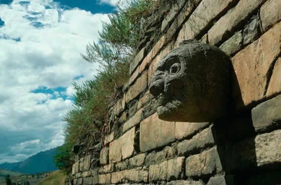
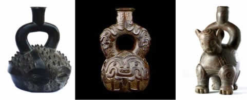
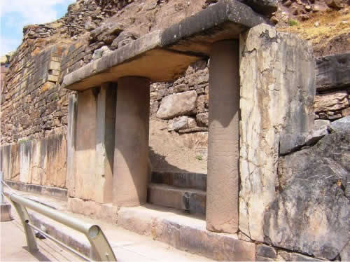

Cultura Chavin
Arte de la cultura Chavín
La cultura Chavín fue una civilización pre inca que se desarrolló Entre los años 1 000 a .C. a 200 a .C., cuyo capital Chavín de Huántar, provincia de Huari, del departamento de Ancash, Perú, a orillas del río Mosna, en la cuenca del afluente del alto Marañón a 3 177 m.s.n.m., su descubridor fue el arqueólogo Julio César Tello en 1919, se extendió desde Lambayeque hasta Palpa (Ica) por la Costa , y desde Cajamarca hasta Ayacucho, por la Sierra. Se conoce como “Fenómeno Chavín” por la unificación cultural, producto y resultado de la difusión religiosa. Se considera la “cultura matriz” de la civilización andina.
Está ubicado en el período formativo u horizonte temprano, probablemente los habitantes de Chavín eran influenciados por las regiones selváticas, puesto que en sus manifestaciones artísticas se observan iconografías zoomorfa y antropomorfa, como la figura del jaguar, otorongo, serpientes, propios de la zona tropical. Chavín era considerada la más antigua cultura pre inca, aunque excavaciones recientes revelaron la existencia de otra aún más antigua: Caral.
Esta civilización estaba basada económicamente en la agricultura, por ello desarrollaron una tecnología hidráulica muy avanzada en el sistema de drenaje, creando métodos para la irrigación de tierras de cultivo (canales), fueron adoradores de la naturaleza, adoración a los felinos (jaguar, puma, serpientes, etc.) que infundían terror, construyeron templos para rendir culto, utilizaron la piedra como material base para su arquitectura y escultura, construyeron grandes templos, con plataformas y galerías subterráneas y muy adornadas, de igual modo la cerámica con estilo propio, orfebrería y el arte textil. Cabe remarcar que fueron grandes escultores. 
Manifestaciones artísticas:
En Escultura: Se caracteriza por el esculpido en piedra, representaron dioses con figuras antropomorfas y zoomorfas como: las “cabezas clavas”, de boca de felino con colmillos, cabello capilar convertido en serpientes, se encontraban empotradas en los muros externos y de los templos, eran considerados como guardianes o para ahuyentar a los malos espíritus.
La Estela de Raimondi, es una escultura de 1.98 m. de altura por 74 cm. de ancho, un bloque de piedra de granito, de forma rectangular plana, solo una de sus caras está esculpida en relieve plana con una representación divina de los Chavín, representa a un personaje parado, posee rasgos antropomorfos y zoomorfos como: los cabellos y cejas en forma de serpientes, la boca con dos grandes colmillos y las manos con garras felinas, representa al” dios de los báculos”, sobre ella gira todo, el centro del universo. Actualmente se conserva en el patio del Museo Nacional de Arqueología Antropología e Historia del Perú. El lanzón monolítico, es otra escultura muy importante, mide 5 metros de alto, en forma de cuchilla gigante, clavado en el suelo en la zona céntrica del templo antiguo, dentro de una compleja red de galerías subterráneas en un espacio reducido del complejo de Huántar, representa al dios de Chavín, llamado Wiracocha, tiene esculpido un ser antropomorfo, con atributos zoomorfos, sus ojos son serpientes, presenta una técnica de bajo relieve.
El obelisco de Tello, Es un pilar de granito de 2.52 m. de altura, de corte trapezoidal, esculpido en las cuatro caras, se encuentra en el sitio arqueológico de chavín de Huántar, tiene dos figuras verticales, identificados como caimanes, representa a un compleja divinidad, se dice que uno de los caimanes (macho) se asocia con el cielo y la temporada de lluvia, mientras que el otro (hembra) representa a la tierra y la estación seca. Presenta una talla muy compleja como aves, hombres, felinos, plantas, etc. Fue descubierto por Julio C. Tello.
En arquitectura, fue la expresión grandiosa de la civilización Chavín, se puede apreciar hoy los restos de sus templos, un conjunto de edificios, terrazas, plataformas, galerías subterráneas, canales, columnas; así como el “Castillo Chavín” o “Templo Chavín, que está compuesto por varias estructuras, así como áreas y edificios denominados: Templo Viejo, fue construido partiendo de un templo primordial de bases modestas, con el transcurrir del tiempo, esta estructura habría soportado diversas ampliaciones, consta de una plaza circular en el atrio sirviendo de ingreso, Templo Nuevo (castillo), en una etapa posterior, se habría consolidado por sus proporciones mayores y construido al lado, cuenta con una plaza cuadrada. Cada templo tenía un pórtico principal. El ingreso al Templo Nuevo se llama Portada de las Falcónidas, con grabados en las en los pilares y es precedido por un atrio y un conjunto de escalinatas que ascienden desde la plaza cuadrada, donde también hay litoesculturas únicas ejerciendo las funciones de dinteles, columnas o lápidas con grabados de personajes del estilo Chavín.
En Cerámica, se caracteriza por ser escultórico y de color monocromo, (gris y marrón), encontraron variedad de formas; pero predominan las formas globulares, cuerpo macizo, con gollete cilíndrico y asa estribo, con diseños en alto relieve (zoomorfos y antropomorfos), de animales selváticos, frutos y huacos ceremoniales. En Textilería, el decorado con la técnica del teñido resistente, emplearon los colores, rojo, anaranjado, marrón y otras tonalidades verde oliva y azul. Metalurgia, trabajaron en oro, también se ha  encontrado aleaciones en oro y plata, pectorales, collares, coronas; el collar de Kunturwasi y el tesoro de Chongoyape (aretes, sortijas, narigueras), utilizaron la técnica del martillado en láminas de oro.
encontrado aleaciones en oro y plata, pectorales, collares, coronas; el collar de Kunturwasi y el tesoro de Chongoyape (aretes, sortijas, narigueras), utilizaron la técnica del martillado en láminas de oro.
Como se podrá observar, la Cultura Chavín, se caracterizó por tener un estilo e iconografía propia en todos sus elementos culturales, hoy en día, Chavín de Huántar es admirado por todos los visitantes nacionales y extranjeros.
Correo de contacto